지난 시간에는 flat plate에서의
boundary layer equation을 분석하여,
blasius solution을 유도하였다.
이번에는,
Ue = Ue(x) 즉, 상수가 아니라 x에 따른 함수
라고
설정하고 boundary layer equation을 풀어보자.

blasius Solution과 동일하게
similarity solution 방법을 이용한다.
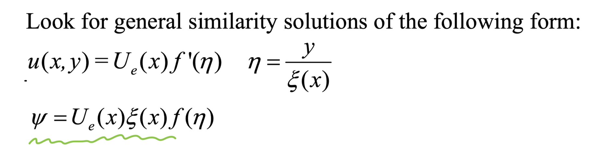
stream function, η, ξ(x) 함수로 치환된, u,v를
위의 boundary layer Eq에 대입해주자.
(복잡한 수식파티를 생략...)

똑같이, 정리하면 f(
η)에 관한 Non-linear ODE가 나온다.
여기서
Boundary condition,
상수 alpha, beta
는 다음과 같다.
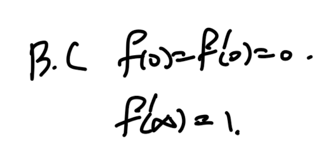

추후에 쓰일, alpha, beta의 조합으로 유도한 (c)은 다음과 같다.

여기서 이제 Geometry에 따라서,
alpha , beta값이 다르고,
ODE의 solution이 다르다는 것이다.
1. Flat plate.
flat plate의 경우를 확인해보자.(dUe/dx = 0)

이 경우, beta = 0, alpha. = 1/2임을 알 수 있다.

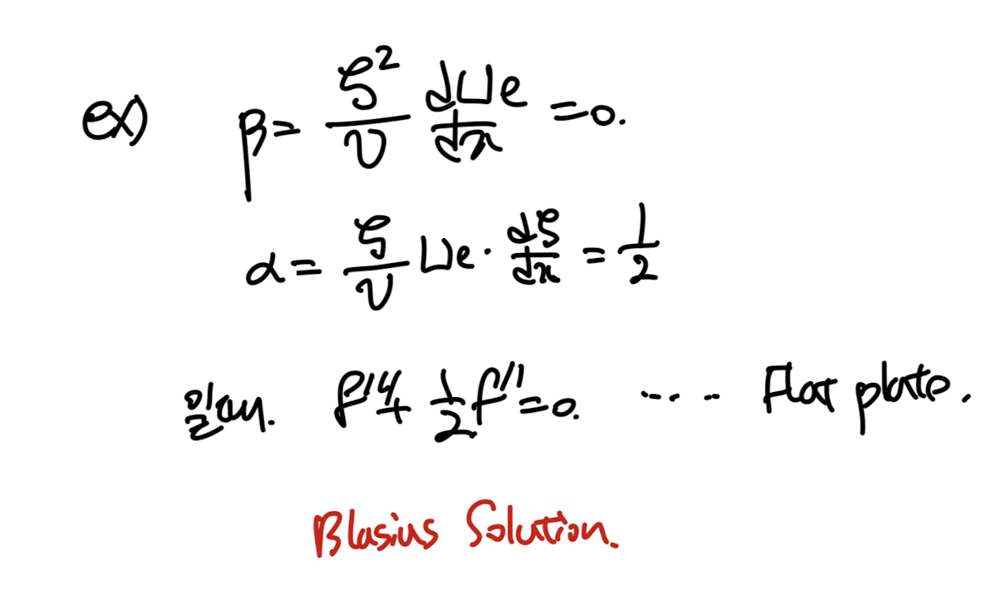
flat plate boundary layer thickness.
우리가 이전에 유도하였던 ODE식과 동일하다.
2. Flow over a Wedge
이제 한번 alpha = 1일때를 분석해보자.
최종적으로 free stream velocity
Ue 는 x의 지수함수 꼴인것을 알 수 있다.
(지수에 beta)
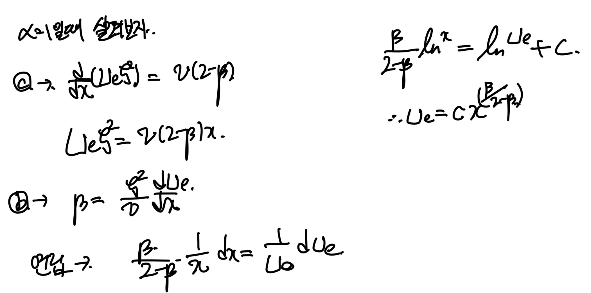
free stream이 x에 따라서 저렇게 지수함수 꼴인 경우는,
geometry가 어떤 경우일까???
바로 wedge위로 흐르는 경우이다.

flow over a wedge
여기서 wedge의 각도 비율을 n으로 지정하여,
(n이 클수록 경사진 wedge)
n에 따라서 f식이 어떻게 solve되는지를
plot한 그래프가 아래와 같다.

3. Flow in a convergent channel.
alpha = 0, beta = 1인 경우를 분석해보면,

Free stream이 x에 따른 분수 함수인 경우는 다음과 같이
converging channel인 경우이다.
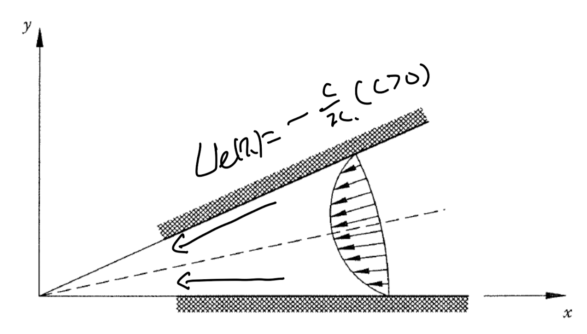
지금까지는 굉장히 simple 한 geometry에 대해서
alpha, beta를 정의하고,
Free stream velocity profile이
간단하게 수학적으로 표현한 경우였다.
이 경우, 우리는 f를 구할 수 있어,
최종적으로 속도장, boundary layer thickness
의 exact solution을 구할 수 있었다.
하지만, geometry가 복잡
해지면,
우리는 free stream velocity도,
alpha beta도 단순하게 define할 수 없을 것이다
따라서, boundary layer equation을
integral방식으로 한번 해석해보자.
(for severely complicate situation)
시작은 boundary layer equation이다.
(Newtonian fluid 가정 x)
(점성항을 shear stress를 가지고 표현한 Naviers stokes 식)
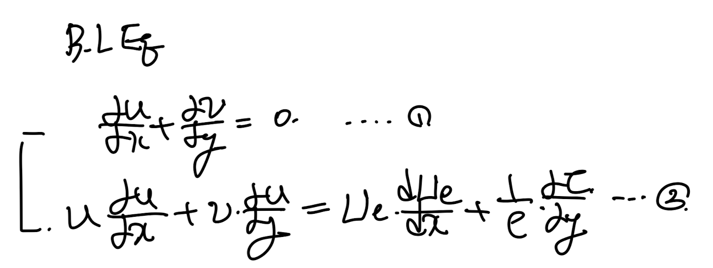
2번식을 살짝 변형하여 3번식을 만들어주자.

1번식 - 연속방정식을 이용하면, 4번식을 유도할 . 수있다.
(바로 뒤에 쓰려고)

그리고 3번식 양변을 적분해주자.
(Boundary condition 으로 정리, u(y=0) = 0)

4번식을 v_infin에 대입해주고,
초록생항을 빼서 따로 부분적분후 대입해주자.


여기서 Ue(x) x에 오직 관한 함수임을 이용하여,
자유롭게 y에 관한 적분기호를 in and out 할 수 있다.

쭉 전개를 하면 귀신같이 우리가 이전 포스터에서 정의하였던,
Momentum thickness( θ)
Displacement thickness(δ)
가 나온다.
이를 치환후 대입해주면,
최종적으로 Von Karman
Boundary Layer Momentum Integral Equation

5번식에서 변수는 3가지이다.

따라서, 5번식을 풀기 위해서,
과학자들은 2가지 실험식을 세운후,
식의 해를 유도해보자 ->
타이와트스 방법
[Thwaites' Method]
Lambda: 무차원수
그에 따른 함수 l, H를 다음과 같이 정의하자.
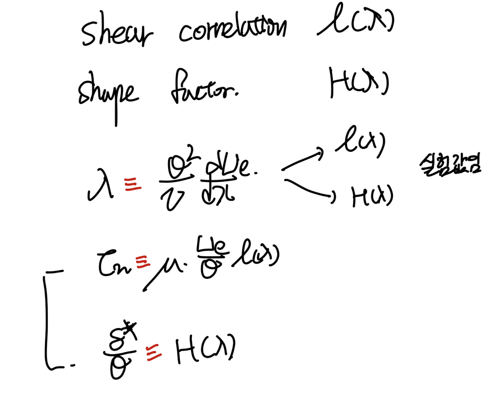
Thwaites' Method parameters' definition
5번식의 좌항이 l( λ) 되도록
양변을 변형해주자

마지막 두 밑줄친 빨간색 항을 합쳐주자.
(정의한 H, λ 대입)
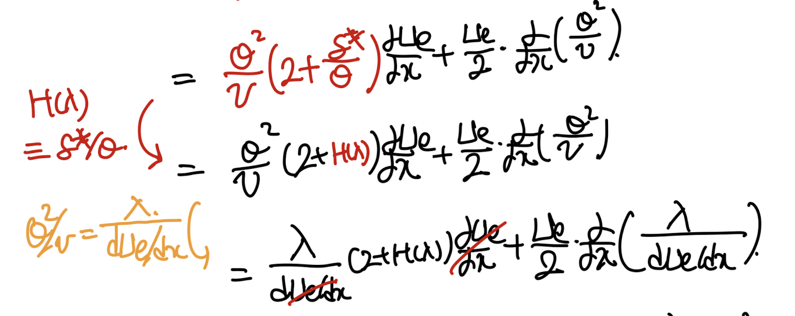
시작은 l( λ)
이었기 때문에,

위 식을 정리후, L( λ)를 새롭게 정의하자.

재밌는 사실은 실험을 통해서,
L( λ)를 일차함수로 data fitting하였다는 것이다.
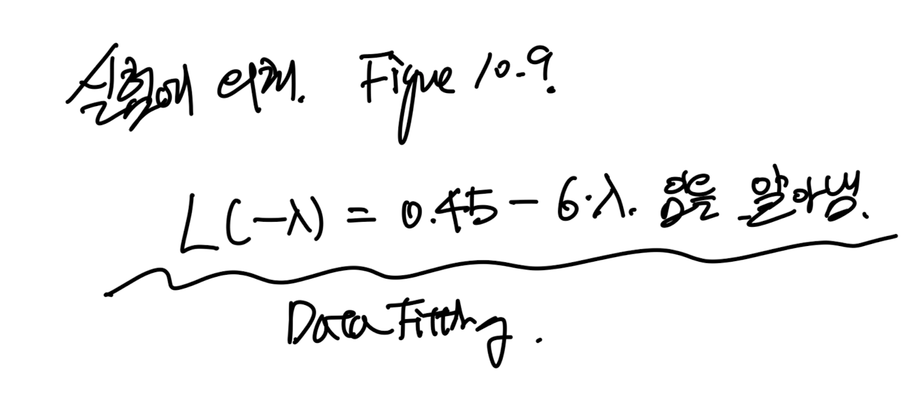
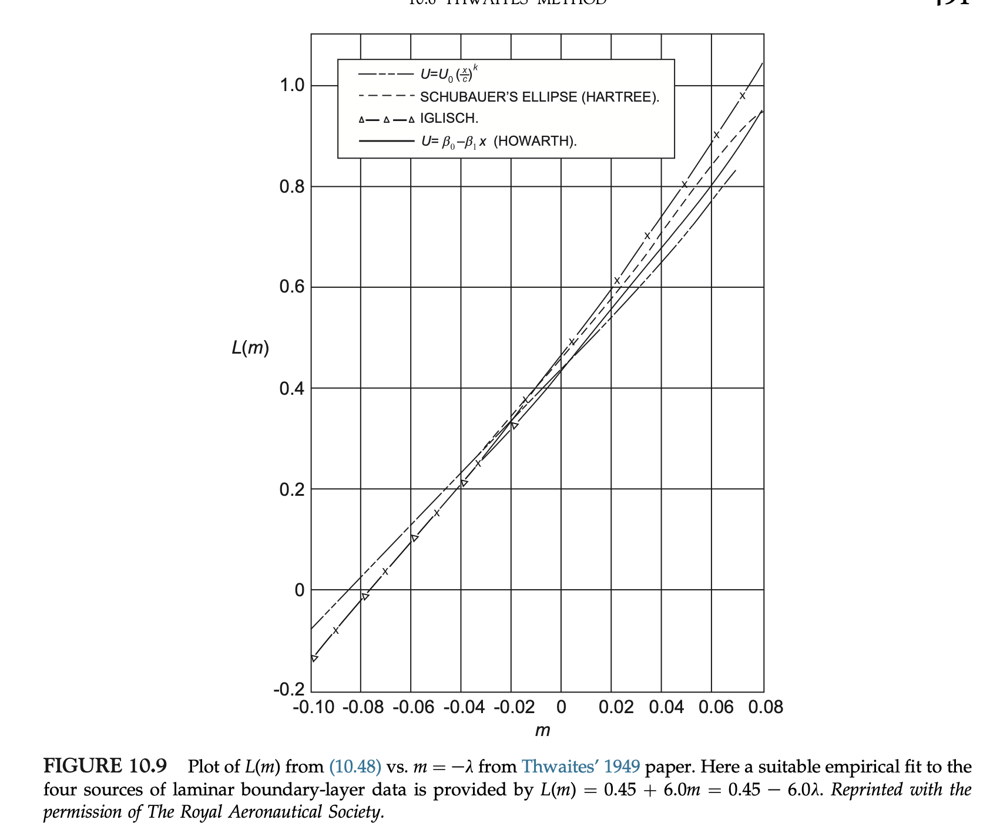
데이터 피팅한 식을 아까 치환하였던 식과 같다라고
하고 식을 전개하자.
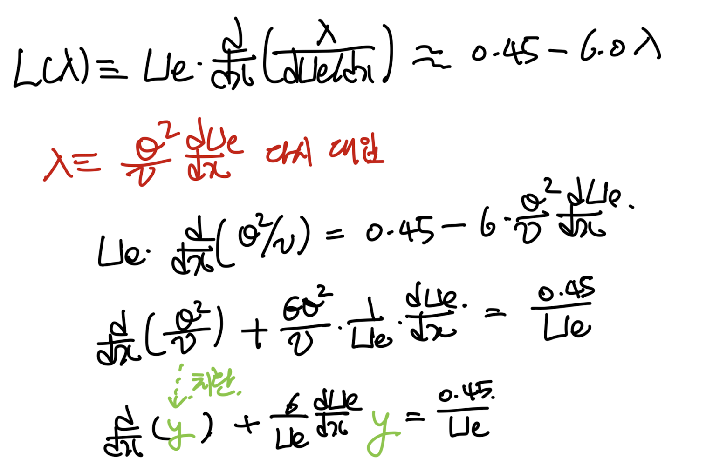
마지막 식으로 간단한 1차 linear ODE가 나온다.

위 풀이 방법을 그대로 저용하여,
우리의 식의 해를 구하자.
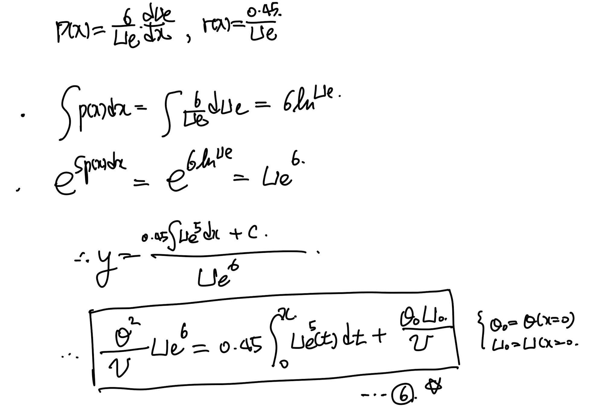
위 식을 통해서, 결국
Ue: Free stream velocity의 함수가
어떤 함수인지 알면,
momentum thickness(θ)를
구할 수 있다.
ex) flate plate
의 경우에 6번식항들이 간단하게 소거된다.

blasius eq의 경우 0.671-> 0.664 였음.
이후,
λ
값을 아는 상태에서,
l( λ), H ( λ)는 실험측정에 의해 이미 아는 값이기 때문에,
shear stress,
displacement thickness
Skin friction coefficient
를 구할 수 있다.

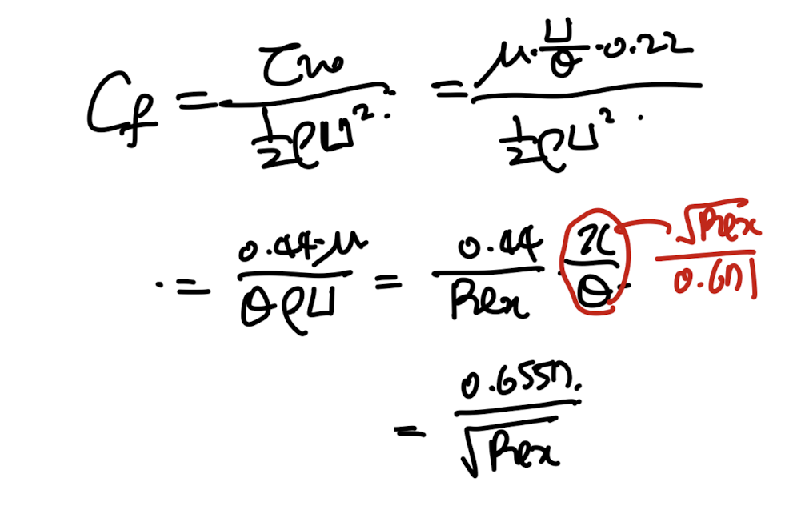
ex) Down streaming flow
위와 같이 경사를 하강하는 유체의 경우.
velocity profile을 다음과 같이 define하면
6번식을 통해서,
lambda를 x에 따른 함수로 유도할 수 있다.
즉 x -> λ -> l( λ), H ( λ) -> θ, δ

재밌는 사실은
추후에 배우겠지만,
shear stress = 0 일때, flow separation이 일어난다.
l( λ) =. 0 일때, flow separation occurs.

l( λ) 실험 측정 Appendix 를 살펴보면,
λ = -0.09일때, l( λ) = 0 이다.
따라서, 우리는 flow separation 위치를 예측 할 수 있다.
e
x) 위의 경사하강하는 flow.